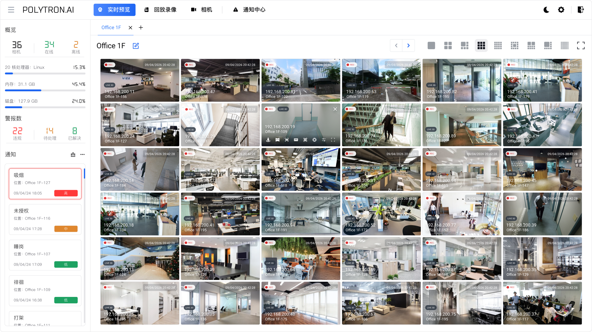
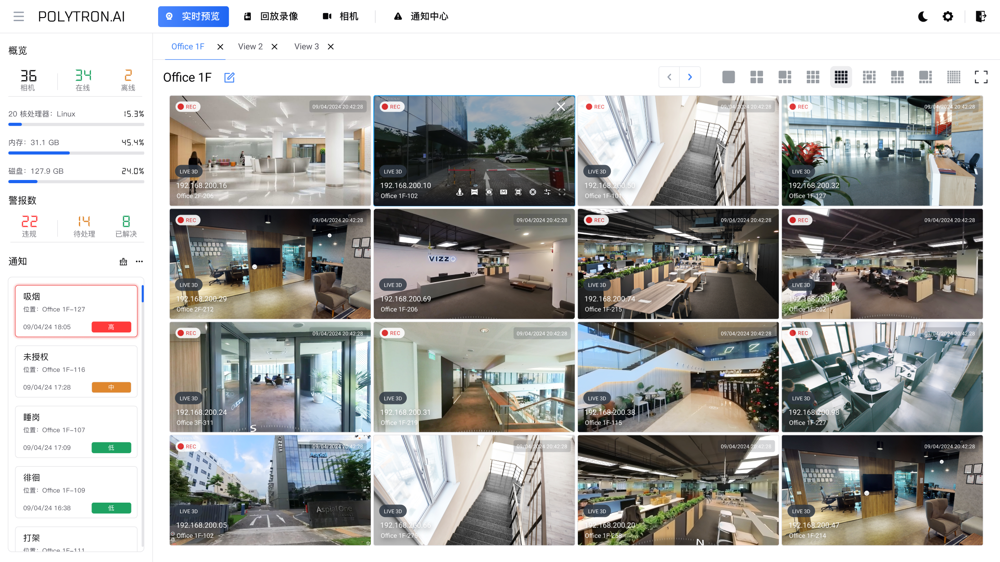
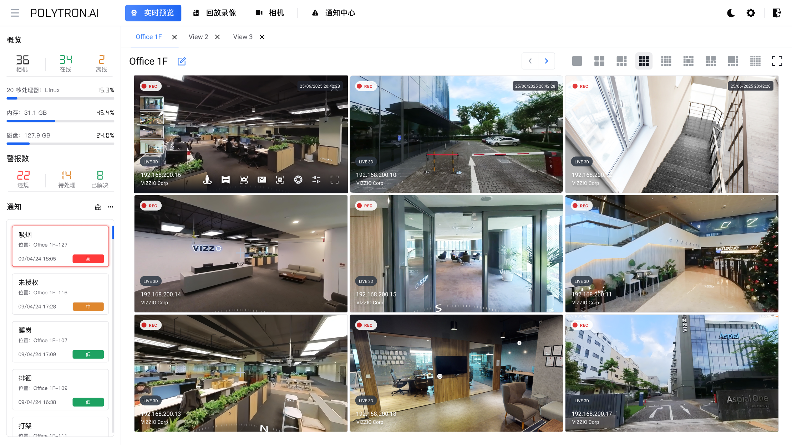

概述
POLYTRON ONE 将相机接入、实时监控、AI 事件检测、警报处置和录像回放整合在同一平台。值守人员可从异常提示进入视频核查和处置，调查人员可检索录像并留存证据，管理员可维护设备、账号和访问范围。本文档按实际使用路径组织，帮助各类用户完成日常监控、事件追溯和系统维护。
产品地图
平台能力全景
从视频资源接入到事件处置与业务协同，POLYTRON ONE 将分散的监控能力组织成统一工作台。
视频资源网络摄像机现有 VMSRTSP · ONVIF
统一智能视频底座POLYTRON ONE
设备管理实时预览AI 检测录像存储警报中心权限审计
应用与协同安防值守事件取证3D / 工单 / 业务系统
设备状态、视频画面、检测结果和处理记录在同一平台内关联，减少跨系统查找与重复操作。
推荐工作方式
核心业务闭环
日常工作不止是查看画面。平台将异常发现、核查、处置和追溯连接成一条完整流程。
- 01接入视频添加并检查相机
- 02配置规则选择区域、时间和算法
- 03智能检测持续分析实时画面
- 04触发警报通知值班人员核查
- 05处置事件确认、备注或标记误报
- 06回放归档保留录像与审计记录
平台能力
- 统一视频接入管理：集中维护相机资料、在线状态、安装位置、区域、接入协议、视频流地址、录像计划和警报配置。按楼栋、楼层或业务区域分组，便于后续预览、检索、回放和资源授权。
- 实时视频预览与多画面查看：使用单画面、多画面网格、标签页、多视图或实时 3D 视角组织监控画面。按任务切换相机分组，并结合空间位置或警报信息定位需要核查的现场。
- AI 智能检测能力：基于相机画面识别人员聚集、越界、徘徊、摔倒、异常行为、物体遗留等事件，并支持人员计数、人脸识别、口罩检测和热力图分析。按现场场景选择已部署的检测能力，结合人工核验判断结果。
- 检测区域与规则配置：在画面中绘制检测区域、越界线或禁入范围，并设置方向、触发条件、持续时间、人数阈值、排期和算法。例如，仅在非工作时段检测人员进入，或在停留时间、聚集人数达到条件时触发警报。
- 警报联动与闭环处置：AI 检测规则触发后，平台关联实时画面、通知、事件详情和前后录像。值守人员可确认、备注、关闭或标记误报，并按业务需要衔接工单或内部处置流程，保留处理记录。
- 历史录像回放与取证：按相机、日期、录像类型和时间范围检索录像，使用播放、暂停、前后定位和倍速等控制核查经过。警报关联片段可帮助还原事件；需要留证时，导出必要的录像范围。
- 通知中心与事件追踪：集中查看警报等级、时间、位置、关联相机、状态和处理进度。使用关键词、时间、状态或类型筛选记录，再进入详情核对视频、AI 标注和备注，追踪从触发到处理的过程。
- 账号、权限与系统配置管理：按岗位配置用户角色、功能权限和相机资源范围，并维护显示、存储、日志保留、录像策略、警报规则及系统参数。区分管理、值守和查看职责，定期检查授权是否仍与工作需要一致。
- 开放系统集成能力：通过 RTSP、ONVIF 等方式接入视频资源，并按项目配置与 VMS、三维可视化、警报平台及业务系统联动。集成可关联视频、事件、设备状态和检测结果，具体接入与输出范围以项目配置为准。
快速导览
 登录验证本章介绍 POLYTRON ONE 的账号登录、凭据保存和密码恢复。首次使用前先获取已分配的账号；登录后，可访问内容由角色权限决定。
登录验证本章介绍 POLYTRON ONE 的账号登录、凭据保存和密码恢复。首次使用前先获取已分配的账号；登录后，可访问内容由角色权限决定。 实时视图实时视图用于日常值守、区域巡查和警报现场核查。通过标签页组织相机，再按任务选择网格布局；需要时使用快照、分析、云台和 3D 关联定位并检查现场。
实时视图实时视图用于日常值守、区域巡查和警报现场核查。通过标签页组织相机，再按任务选择网格布局；需要时使用快照、分析、云台和 3D 关联定位并检查现场。 回放在同一工作台中搜索目标、定位历史录像并核查事件。限定相机和时间范围后，可从匹配结果进入多画面对照、时间轴核查及片段导出。
回放在同一工作台中搜索目标、定位历史录像并核查事件。限定相机和时间范围后，可从匹配结果进入多画面对照、时间轴核查及片段导出。 相机集中维护相机资料、连接参数、3D 地址、录像计划和警报规则，为实时查看、历史回放、事件核查及资源权限提供准确的设备信息。
相机集中维护相机资料、连接参数、3D 地址、录像计划和警报规则，为实时查看、历史回放、事件核查及资源权限提供准确的设备信息。 通知集中查看和筛选警报，按风险安排核查顺序，并通过详情中的分类、备注和状态追踪处理进度。
通知集中查看和筛选警报，按风险安排核查顺序，并通过详情中的分类、备注和状态追踪处理进度。 设置集中维护显示偏好、账号、角色权限、存储策略和日志。修改前确认影响范围，保存后核对相关用户与业务流程。
设置集中维护显示偏好、账号、角色权限、存储策略和日志。修改前确认影响范围，保存后核对相关用户与业务流程。界面示例


